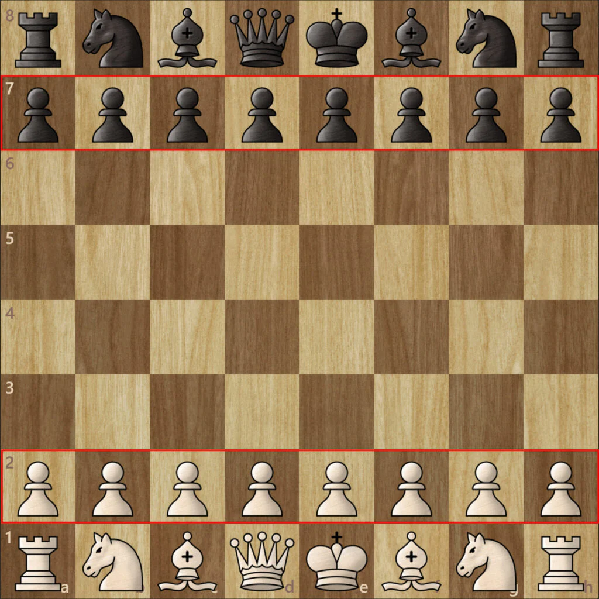
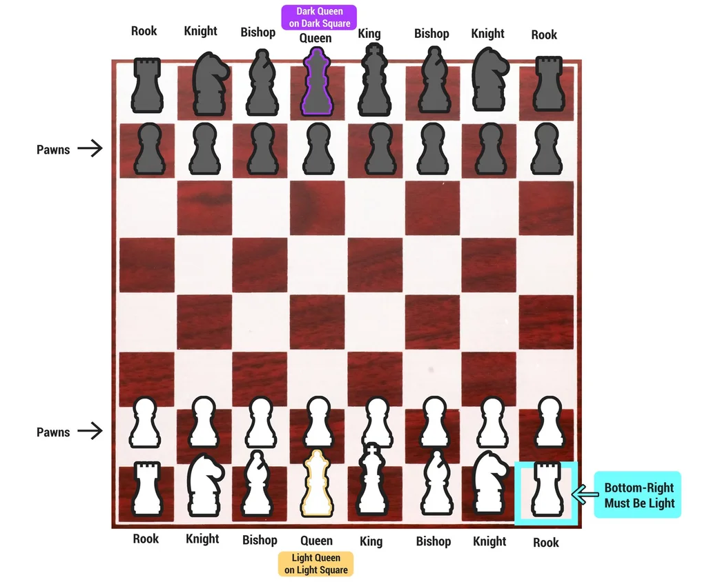
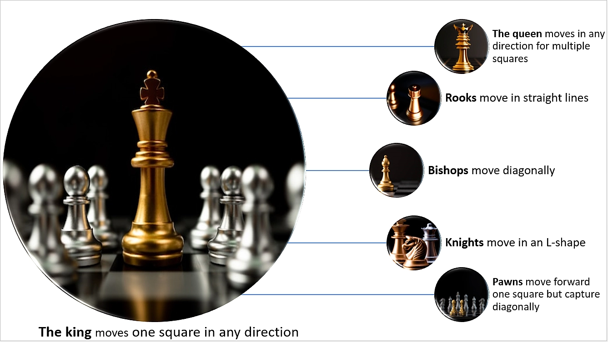
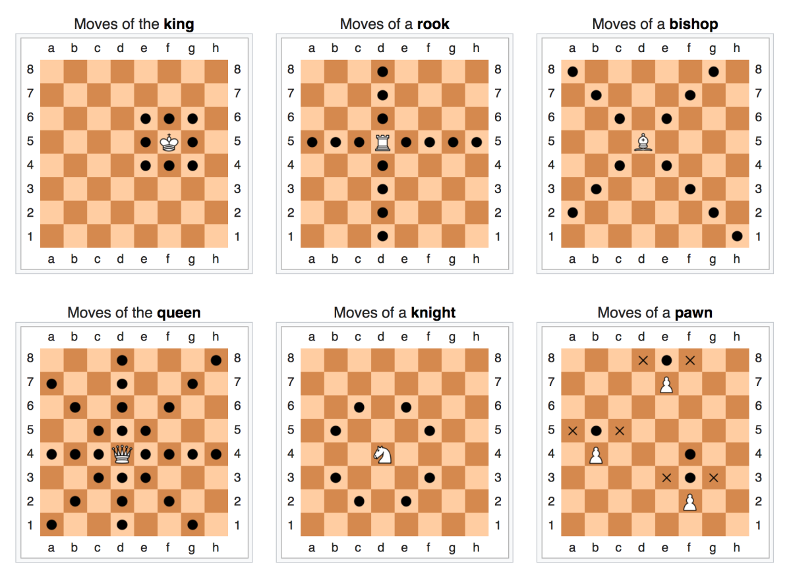
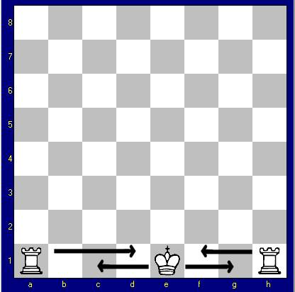
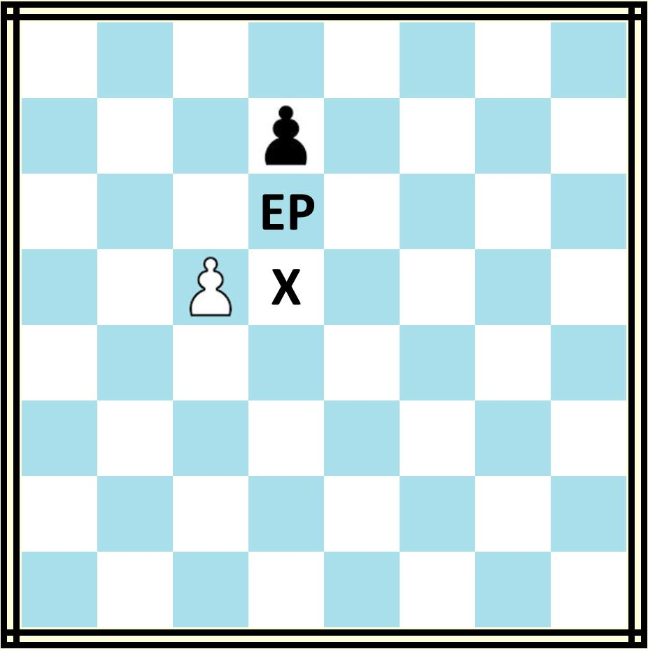
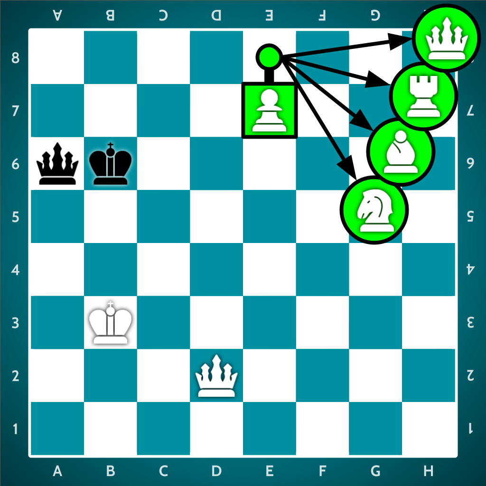

What is Chess
Chess is a two-player strategy game played on an 8x8 board with 64 squares. Each player controls 16 pieces and aims to checkmate the opponent's king. The game is turn-based, meaning each player moves one piece per turn.
Setup of the board


- The board has 8 rows and 8 columns
- Each player starts on opposite sides
- White always moves first
- The queen starts on her own color (white queen on white square, black queen on black square)
- The bottom-right square should always be white
How each pieces move


- King: Moves 1 square in any direction. The most important piece — if it gets trapped, you lose.
- Queen: Moves any number of squares in all directions, the strongest piece.
- Rook: Moves horizontally or vertically any number of squares.
- Bishop: Moves diagonally any number of squares.
- Knight: Moves in an “L” shape and can jump over pieces.
- Pawn: Moves forward 1 square (or 2 on its first move), captures diagonally.
Main rules
- Players take turns, one move at a time
- You cannot move your king into danger (check)
- If your king is under attack, you must remove the threat
- If you cannot escape check → checkmate (game over)
- If no legal moves and not in check → stalemate (draw)
- You cannot capture your own pieces
Special rules and moves



- Castling (1st image)
- En Passant (2nd image)
- Pawn Promotion (3rd image)
A special move involving the king and rook. It helps protect the king and activate the rook. The king moves two squares toward the rook, and the rook jumps over it.
A special pawn capture that only happens when a pawn moves two squares forward from its starting position and lands beside an enemy pawn.
When a pawn reaches the opposite side of the board, it can turn into a queen, rook, bishop, or knight.
How to win
The main goal is checkmate - when the opponent's king is under attack and has no legal escape. This ends the game immediately. You can also win when the opponent resigns or opponent's time ran out.
Thanks to House of Staunton Mashupmath Enthuziastic Hubpages Acquiscacchi2 Logicalchess Dized for the images.
Video about the Rules
Thanks to Mr. Animate, GothamChess, Chess.com and Chess Talk.